This page brings together basic information about the Han Simplified and Traditional writing systems and their use for the Chinese language. It aims to provide a brief, descriptive summary of the modern, printed orthography and typographic features, and to advise how to write Chinese using Unicode.
Two styles of Han characters are used to write Chinese. The traditional orthography was used from the 5th century until 1949 in Mainland China. The simplified orthography was introduced in 1949 and is used in Mainland China and Singapore. Traditional Han is still used in Taiwan, Hong Kong and Macau, and for aesthetic purposes elsewhere in East Asia.
People speaking different Chinese dialects nevertheless write largely the same way, due to the way that the Han characters represent concepts rather than sounds.
Han characters are also widely used in Japan to represent the main part of Japanese words, and sometimes used in Korea (though modern Korean text will contain very few, if any, han characters).
汉字hànzìSimplified Chinese漢字hànzìTraditional Chinese
Chinese writing dates from the second half of the second millenium BC. There is no evidence for a predecessor. The earliest inscriptions were on bones and shells used in divination during the Shang dynasty (1600-1046 BC), and employed a set of logographic symbols now known as the Oracle Bone Script. Although these symbols have been extinct since the end of the Bronze Age, the modern Han characters are direct descendants from these.
The Han script is an ideographic script. Letters typically represent a spoken syllable with its tone. See the table to the right for a brief overview of features for the modern Mandarin Chinese orthography, using the Simplified Chinese orthography.
The character count reflects a typical set of characters needed for everyday reading and writing: there are many thousands more Han characters that could be added for other purposes (see chars).
The Simplified Chinese orthography has a smaller repertoire and simpler shapes than the Traditional version.
The Chinese script is used as a common writing system by people who may speak a wide variety of Chinese languages, and who may pronounce the written text very differently. This is possible because the characters represent concepts rather than phonetics.
Text can be written in one of 2 directions: horizontally, left to right, or vertically with lines progressing from right to left. Vertically set text is more common in Traditional Chinese than Simplified Chinese areas. It was possible until recently to find Chinese text written horiztonally, right to left, but this doesn't normally occur in contemporary texts.
Words are not separated by spaces or any other character. There is no case distinction. The visual forms of characters don't interact.
In its 'main' category, CLDR lists 2,210 characters for the Simplified Chinese orthography, and 2,180 for Traditional Chinese. Combined, this includes 3,026 unique characters, and an overlap of 1,064 characters.
The language is tonal, but the tones are not written explicitly.
Chinese has no combining marks, but has many punctuation marks. It also has a relatively complex set of typographic rules.
This section lists sounds for Mandarin Chinese, as spoken in the Beijing area.
Click on the sounds to reveal locations in this document where they are mentioned.
Phones in a lighter colour are non-native or allophones.wp.
Vowel sounds
Plain vowels
Diphthongs
Consonant sounds
labial
dental
alveolar
post-
alveolar
retroflex
palatal
velar
stops
p
t
k
aspirated
pʰ
tʰ
kʰ
affricates
t͡s
t͡ɕ
t͡ʂ
aspirated
t͡sʰ
t͡ɕʰ
t͡ʂʰ
fricative
f
s
ɕ
ʂ
x
nasal
m
n
ŋ
approximant
l
ɻ
Tone
tbd
Structure
tbd
Characters
'Ideographic' characters
Chinese text is primarily constructed from characters that each correspond to a phonetic symbol, including a tone. Some have pictographic origins that are still evident, whereas others have a more complicated structure.
It is said that Chinese people typically use around 3-4,000 characters for most communication, but a reasonable word processor would need to support at least 10,000. Unicode supports over 70,000 Han characters, most of which cover advanced or esoteric usage.
CLDR character lists
The listings here show a list of characters used per version 36 of CLDR's lists of characters (exemplarCharacters).
In its 'main' category, CLDR lists 2,210 characters for the Simplified Chinese orthography, and 2,180 for Traditional Chinese. Combined, this includes 3,026 unique characters, and an overlap of 1,064 characters.
A radical is an ideograph or, more commonly, a component of an ideograph that is used for indexing dictionaries and word
lists, and as the basis for creating new ideographs. The 214 radicals of the KangXi dictionary are universally recognised.
The visual appearance of radicals may vary significantly from the original character on which they are based.
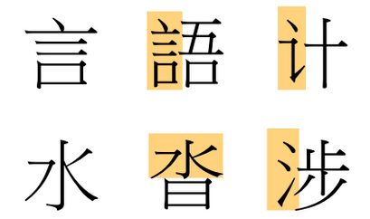
Han character for word/say/speak (top) and water (bottom), and associated radicals used in other characters (highlighted yellow).
The shape of the radical may be influenced by the arrangement with other elements of a character, or by standardised simplifications. In the figure above, the shape of the top right radical (word) is a product of the simplification process in China.
Unicode dedicates two blocks to radicals. The KangXi radicals block contains the base forms of the 214 radicals.
The CJK Radicals Supplement contains variant shapes of these radicals when they are used as parts of other characters or in simplified
form. These have not been unified because they often appear independently in dictionaries indices.
Characters in those blocks should never be used as ideographs.
Vowel absence
tbd
Symbols
No characters with the general property symbol are included in the CLDR sets.
Text direction
Text can be written horizontally, left to right, or vertically with lines progressing from right to left. Vertically set text is more common in traditional chinese than simplified chinese areas.
Older horizontally set texts in Chinese also ran right to left.
It should be noted, however, that horizontal and vertical text is not usually identical. Apart from the question of what gets rotated and what does not, the two writing modes may show different preferences for emphasis marks, brackets, numbers, and so forth.
Glyph shaping & positioning
This section brings together information about the following topics:
font/writing styles;
cursive text;
context-based shaping;
context-based positioning;
letterform slopes, weights, & italics;
case & other character transforms.
Han characters have no contextual variation or placement of glyphs. Nor is text cursive (in the sense of joined-up).
The orthography has no case distinction, and no special transforms are needed to convert between characters.
On the other hand, punctuation and embedded text in other scripts is affected by the direction of lines.
By default, all han characters and punctuation are inside a character frame that is square and the same size for all characters. The box containing the actual symbol is called the letter face, and there should be some space left between the letter face and the character frame. There may be variations, particularly for punctuation, etc., in the size of the letter face.
Character frame and letter face.
Because of the regularity of the character frame size, it can be used to measure the size of the text area or other parts of a page (horizontally or vertically).
In principle, Han characters are set solid, ie. with no space between the character frames. However, text alignment and justification can make adjustments to the placement of characters in the direction of the line flow. See justify and letterspace.
Character frame and letter face.
Context-based shaping & positioning
Dashes, ellipses, and brackets are rotated 90º to the right when they appear in vertical text. Here is a list of characters to which this applies.c,#table_of_punctuation_marks
Since there are no combining marks or decompositions, graphemes correspond to individual characters.
Unicode grapheme clusters can be applied to Chinese without problems. There are no special issues related to operations that use grapheme clusters as their basic unit of text.
Punctuation & inline features
Several of the following sections include icons after punctuation marks that indicate whether the punctuation is used in horizontal (H) or vertical (V) writing, and whether the character is rotated 90º in vertical text, or translated to a different location in the character frame.
Word boundaries
Chinese rarely uses spaces. In the sample text there are gaps around punctuation, but these are produced by a lack of 'ink' in parts of the square character glyphs:
You can verify this by clicking on this example. The character list popup shows that only three characters make up this sequence, and none are spaces.
别。并
The gap between these characters is only an absence of ink. There is no space character.
Phrase & section boundaries
Chinese uses the following separators at the sentence level and below.c,#h-pause-or-stop-punctuation-marks
． [U+FF0E FULLWIDTH FULL STOP] is used as sentence-final punctuation in, for example, college textbooks, science and technology literature, and grammar books of Western languages, most of which are in horizontal writing mode, and Western language is heavily used.
As the table shows, these punctuation marks are not rotated, however their position varies in Simplified Chinese for horizontal and vertical text, relative to the character frame. In Traditional Chinese they are all centred.
These different positions in Simplified Chinese require dedicated glyphs in the font, and cannot be achieved by simply rotating the glyph.
Chinese also uses the following doubled exclamation/question marks. They remain upright in vertical text.
Dashes can also be used to offset information, in which case Chinese typically uses those listed in the previous section, doubled up.
Although there are a number of other bracket characters (listed just below), they are rarely used in Chinese publications.c,#id81
【␣】␣〖␣〗␣〔␣〕␣［␣］␣｛␣｝
Brackets are also used to indicate titles and proper names (see otherinline).
Quotations & citations
Quotations
Mainland China. Mainland China, where vertical text is not common, uses different quote marks for horizontal and vertical writing. The default quote marks are:
Occasionally, Traditional Chinese text may use double brackets for the default, and single for the embedded. It may also use quotation marks, like Mainland China, but not commonly, and much less so for vertical text.
Titles
Titles of works including books, articles, songs, movies, files, calligraphy and paintings are cited in Chinese in one of two ways:c,#id87
The double brackets tend to be used for book and chapter titles, and the single brackets for articles.c,#glyphs_sizes_and_positions_in_character_faces_of_punctuation_marks
Proper names
Proper names can be highlighted using line decoration, but this time a straight underline. Note that the underline is not used for emphasis in this case. c,#glyphs_sizes_and_positions_in_character_faces_of_punctuation_marks
Emphasis
To express emphasis Chinese uses dots or circles alongside characters, one dot per base character.
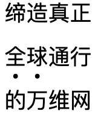全球通行的万维网" style="margin-right: 4em;">
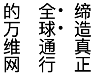全球通行的万维网" style="vertical-align: top;">
Text emphasis in horizontal (left) and vertical (right) text.
In horizontal text, emphasis marks appear underneath the base text. In vertical text, they run down the right-hand side. Regardless of the orientation of the line, the dot is centred alongside or below the base character.
Where both lines and emphasis dots decorate the same run of text, the lines and emphasis dots will usually appear on opposite sides of a vertical line of text, but will normally both appear below a line of horizontally set text. In horizontal text the line decoration is normally closer to the text than the emphasis dots.
In the same way as for other line decorations, embedded text in other languages that run sideways up or down the line would have dots displayed on the same side as when decorating Chinese.
Straight or wavy lines alongside the text are not used for emphasis (unlike in Latin script text), but are instead used in Chinese to indicate proper nouns such as a person's name, a book title, or the name of a place.c,#id82 See inline_titles and inline_propernames.
Abbreviation, ellipsis & repetition
Ellipsis
An ellipsis in Chinese consists of six dots and takes up the space of two Hanzi characters. This is normally achieved using two … [U+2026 HORIZONTAL ELLIPSIS] characters, side-by-side.c,#id83
Inter-line annotations are used to indicate pronunciation (usually only for children or foreigners), and to provide commentaries on or bilingual equivalents of the main text.
With the exception of zhuyin in horizontal text, all annotations appear within the standard inter-line space for the page, and don't create extra space if they appear on a single line. That said, the inter-line space is usually set at an appropriate size to accommodate annotations.
Unlike Japanese, it is rare to find annotations applied just to specific words; generally the whole text is annotated. If annotations are only needed for individual characters or words, they are often presented in parentheses, following.
These annotations do not appear alongside punctuation.
Indicating pronunciation with Latin characters
Pinyin is the most common way of representing pronunciation, although occasionally other transcriptions are used.
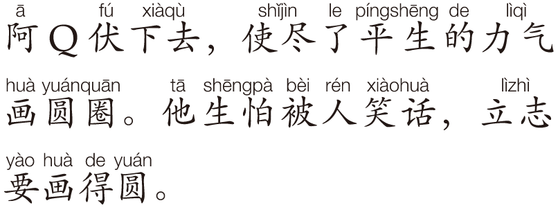
Examples of pinyin, word-based phonetic annotations (source).
The annotation usually appears above the main line of text, except when both zhuyin and pinyin annotations are both present, in which case it commonly appears below the line.
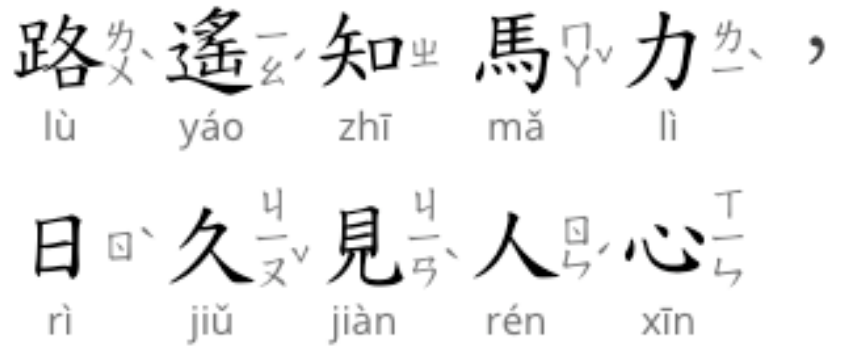
Examples of pinyin and zhuyin phonetic annotations applied to the same base characters (source).
Latin annotations for pronunciation are usually only used with horizontal text.
For native children the annotations are usually applied character by character, whereas for foreign learners they are often applied word by word. The annotation is normally centred above the base text, and contains no spaces.
In order to avoid collisions or wrongly implied word boundaries, there should always be a 1/4em space between adjacent long annotations (usually up to 5 characters per syllable for pinyin). Letter-spacing is typically applied evenly across all the base text to allow room for annotations.
There is a preference for annotations to use a sans-serif font, and for the base text to use Kai.
Indicating pronunciation using Zhuyin Fuhao
The 國語注音符號(guóyǔ zhùyīn fúhào) approach uses a set of characters referred to as bopomofo (after the initial letters in the alphabet), and is mostly used in Taiwan.
The bopomofo annotations usually appear in a vertical column to the right of each base character, in both horizontal and vertical text.
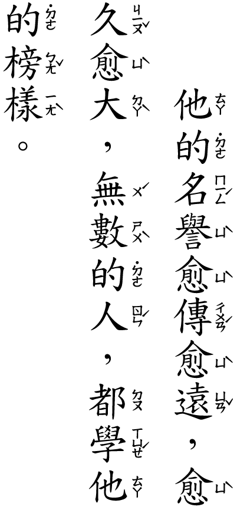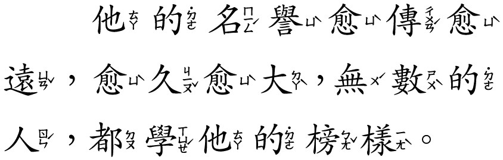Examples of zhuyin phonetic annotations (source).
Each syllable is described by up to 3 bopomofo characters, plus a tone mark. The neutral tone mark appears above the stack, but the others appear to the right of the bopomofo column. The height of the tone mark depends on the number of bopomofo characters to its left. For details, see CLREQ.
Annotations representing meaning or commentaries
These annotations are common in light novels and translated works, and tend to describe phrases or words. They may contain casing, punctuation, and spaces, and may contain Chinese text explaining Latin base text, or vice versa.
They usually appear below a horizontal line of text, and to the left of a vertical line.
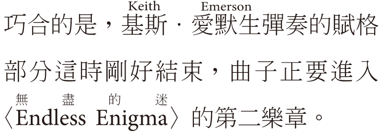
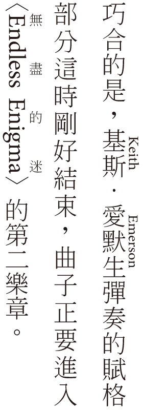
Examples of bilingual annotations (source).
Unlike phonetic annotations, these annotations are only attached to specific words or phrases.
Other punctuation
Chinese uses a large number of punctuation marks, and that number is increased by the duplication of normal vs. fullwidth variants. The fullwidth punctuation often includes significant amounts of white space, so that character frames of the punctuation characters are the same size as Han characters.
CLDR lists 136 punctuation characters for the union of Simplified and Traditional Chinese, grouped here by Unicode block.
CLDR also includes some compatibility characters, included for handling legacy implementations. These include vertical text forms, which should normally be automatically enabled by the font in a vertical context. The other forms should also be avoided in favour of normal characters, with the variant shapes provided by fonts or styling.u,284-5
Dashes. The long dashes mentioned in bracketing can also be used to show a continuation of tone or sound, an abrupt change in thought, or adding new content to the contextc,#id82.
Connectors.Connector marks are used "to indicate the beginning and end of time or space, to indicate quantity, to express the name of a chemical compound, to label a table or illustration, to connect a house number in an address, for a phone number, to separate digits which indicate the year, month and date, or to connect compound nouns and for the romanization, as well as the foreign text in the content".c,#id85
Chinese uses the following punctuation for this.c,#id85
Separators. Interpuncts are used to separate the first name and family name in foreign or minority names rendered using Chinese characters, and with book title marks to separate chapters, articles and volumes in publications.c,#id86
When lines or other text decoration are used, they normally appear below horizontal text, and to the left of vertical text. However, emphasis marks appear to the right of a vertical line.c,#handling_interlinear_punctuation
Where both lines and emphasis dots decorate the same run of text, the lines and emphasis dots will usually appear on opposite sides of a vertical line of text, but will normally both appear together below a line of horizontally set text. In horizontal text the line decoration is normally closer to the text than the emphasis dots.c,#handling_interlinear_punctuation
When two underlined items appear side-by-side, the underline should be broken between the two.c,#handling_interlinear_punctuation
If a line of Chinese text contains some text in another language and orthography, the position of any text decoration should follow the Chinese conventions.c,#handling_interlinear_punctuation
Lines alongside the text are used to indicate personal names, rather than emphasis (see inline_propernames). Wavy lines may also be used to mark a title of a book or work of art (see inline_titles).
Emphasis can be indicated using dots alongside the line (see emphasis).
Line & paragraph layout
Line breaking & word wrap
Lines are normally wrapped between characters – word boundaries have no significance for the wrapping. Chinese should, however, take into account a few rules which dictate what characters cannot appear at the end or start of a line.
There is no hyphenation when Chinese characters are wrapped to the next line.
Line start/end rules
The following characters should not normally begin a line. Instead, they should bring the previous Han character with them.c,#prohibition_rules_for_line_start_end
A slightly more strict rule, called GB-style by CLReq, adds the following solidus characters.c,#prohibition_rules_for_line_start_end
/␣／
A further level of strictness adds the following to the list. Where 2 characters are listed here, they should ideally not be broken across a line ending, but they may be split to reduce the length of text wrapped onto the next line.c,#prohibition_rules_for_line_start_end
⸺␣——␣……␣⋯⋯␣
These rules can be modified by preferences, and in some cases are not observed at all – particularly for Traditional Chinese in Taiwan and Hong Kong, and especially for newsprint, to help deal with narrow columns of text.c,#prohibition_rules_for_line_start_end
Also, where several punctuation marks appear together, for example 。』」, moving all characters from the previous line might create too large a gap for justification to handle elegantly, and so punctuation marks might be allowed to appear at the line start.c,#prohibition_rules_for_line_start_end
The following characters should not appear at the end of a line.
The standard baseline for Han characters is slightly lower than the alphabetic baseline used for Latin characters. Mixed script text needs to align baselines correctly.
Han characters have no ascenders or descenders, but occupy the square space described earlier.
fig_baselines shows metrics for the Heiti TC font. In this font the maximum height of the Han characters reaches slightly higher than the Latin ascenders, but not as low as the Latin descenders.
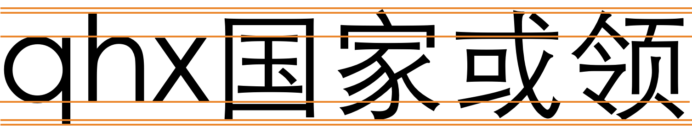
Font metrics for text in the Heiti TC font.
Interline spacing. Interline spacing should be consistent across all lines in a given text. It should allow a gap of sufficient size to include interlinear text decorations, such as lines for proper names or book titles or dots for emphasis marks. If an interline space is likely to include both line decorations and emphasis marks in a single interline gap, then the interline spacing must be set to accomodate that. (Note that paragraphs on the Web may reflow such that a single interline gap may sometimes contain both line decorations and emphasis dots, while at other times the line may only contain one.)
Counters, lists, etc.
You can experiment with counter styles using the Counter styles converter. Patterns for using these styles in CSS can be found in Ready-made Counter Styles, and we use the names of those patterns here to refer to the various styles.
Chinese text uses a number of different counter styles. Some of the more common include full-width European numbers, which in vertical text stand upright. Unicode has various sets of numbers that can be useful here.
For the dotted-decimal numeric style Unicode provides precomposed characters from 1 to 20.
⒈␣⒉␣⒊␣⒋␣⒌␣⒍␣⒎␣⒏␣⒐␣⒑␣⒒␣⒓␣⒔␣⒕␣⒖␣⒗␣⒘␣⒙␣⒚␣⒛
For the circled-decimal numeric style Unicode provides characters from 1 to 50.
Chinese orthographies also use ideographic characters to create 1 numeric, 2 fixed, 1 cyclic, 1 additive and 2 idiosynchratic styles.
Numeric
The cjk-decimal numeric style is decimal-based and uses these digits.rmcs
〇␣一␣二␣三␣四␣五␣六␣七␣八␣九
Examples:
一␣二␣三␣四␣一一␣二二␣三三␣四四␣一三一␣二四二␣三三三␣四六四
Chinese-specific
Several ideographic-based counter styles have an algorithm that is like an additive style, but has some differences. The algorithm to use can be found in the CSS Counter Styles specification, where they are called Longhand East Asian styles.
These styles are all decimal-based, and use the same algorithm but with different characters. The CSS spec only defines the algorithm up to 9,999, because there appears to be some disagreement about how larger numbers are handled.
The simp-chinese-informal longhand style uses the characters shown just below. The separator for lists is 、 and the numbers can be negative when using the symbol 负.
零␣一␣二␣三␣四␣五␣六␣七␣八␣九␣十␣百␣千
Examples:
一␣二␣三␣四␣十一␣二十二␣三十三␣四十四␣一百三十一␣二百四十二␣三百三十三␣四百六十四
The trad-chinese-informal style uses exactly the same characters, except that the negative symbol is 負.
The simp-chinese-formal longhand style uses the characters shown below. The separator for lists is 、 and the numbers can be negative when using the symbol 负.
零␣壹␣贰␣叁␣肆␣伍␣陆␣柒␣捌␣玖␣拾␣佰␣仟
Examples:
壹␣贰␣叁␣肆␣壹拾壹␣贰拾贰␣叁拾叁␣肆拾肆␣壹佰叁拾壹␣贰佰肆拾贰␣叁佰叁拾叁␣肆佰陆拾肆
The trad-chinese-formal longhand style uses 3 different code points where there is a difference in shape (for 2, 3, and 6), shown below. The separator for lists is 、 and the numbers can be negative when using the symbol 負.
零␣壹␣貳␣參␣肆␣伍␣陸␣柒␣捌␣玖␣拾␣佰␣仟
Examples:
壹␣貳␣參␣肆␣壹拾壹␣貳拾貳␣參拾參␣肆拾肆␣壹佰參拾壹␣貳佰肆拾貳␣參佰參拾參␣肆佰陸拾肆
Fixed
The cjk-earthly-branch fixed style uses the letters shown just below. It is only able to count to 12.
子␣丑␣寅␣卯␣辰␣巳␣午␣未␣申␣酉␣戌␣亥
The cjk-heavenly-stem fixed style uses the letters shown below. It is also only able to count to 10.
甲␣乙␣丙␣丁␣戊␣己␣庚␣辛␣壬␣癸
The circled-ideograph fixed style uses the letters shown below. It is only able to count to 10.
㊀␣㊁␣㊂␣㊃␣㊄␣㊅␣㊆␣㊇␣㊈␣㊉
The parenthesised-ideograph fixed style uses the letters shown below. It is also only able to count to 10.
㈠␣㈡␣㈢␣㈣␣㈤␣㈥␣㈦␣㈧␣㈨␣㈩
Cyclic
The cjk-stem-branch cyclic style uses the pairs of characters shown just below. Once 60 is reached, the list begins over.
The cjk-tally-mark additive style uses the letters shown just above. It is based on only 5 basic characters, which were introduced in Unicode 11. The potential range of this style is very large, but counters rapidly grow in size, so smaller numbers are most likely.
Prefixes and suffixes
The most common suffix is 、 [U+3001 IDEOGRAPHIC COMMA]. The circled or parenthesised fixed styles have no prefix/suffix.
Examples:
一、二、三、四、五、
Separator for Chinese list counters.
Page & book layout
Forms & user interaction
Form controls on Web pages should be rotated 90 degrees clockwise, compared to the form controls for Western languages.9→
The following figures show examples of what is expected. Major browsers don't fully support forms with this orientation at the time of writing.
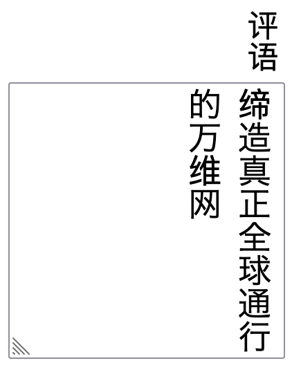
Text entry form controls.
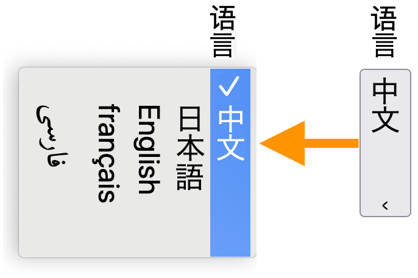
A select control closed (right) and then open while the user makes a choice (left).
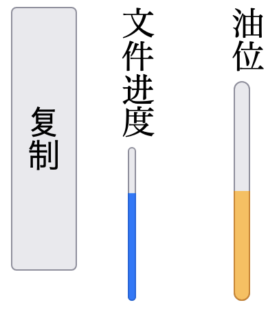
Meter, progress, and button elements (right to left).
Character lists
The Han script characters in Unicode 13.0 are spread across 7 blocks. The total number of these characters is 92,896.